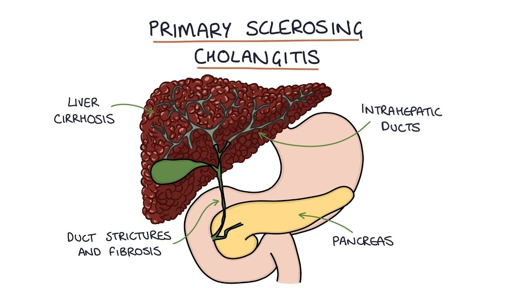

Sclerosing cholangitis

SYMPTOMS:
Early signs and symptoms often include:
- Fatigue
-
Itching
-
Yellow eyes and skin (jaundice)
-
Abdominal pain
Signs and symptoms that may appear as the disease progresses include:
- Fever
-
Chills
-
Night sweats
-
Enlarged liver
-
Enlarged spleen
-
Weight loss
CAUSES
- It's not clear what causes primary sclerosing cholangitis. An immune system reaction to an infection or toxin may trigger the disease in people who are genetically predisposed to it.
-
A large proportion of people with primary sclerosing cholangitis also have inflammatory bowel disease, an umbrella term that includes ulcerative colitis and Crohn's disease.
-
Primary sclerosing cholangitis and inflammatory bowel disease don't always appear at the same time, though. In some cases, primary sclerosing cholangitis is present for years before inflammatory bowel disease occurs. If primary sclerosing cholangitis is diagnosed, it's important to look for inflammatory bowel disease because there is a greater risk of colon cancer.
-
Somewhat less often, people being treated for inflammatory bowel disease turn out to have primary sclerosing cholangitis as well. And rarely, people with primary sclerosing cholangitis develop inflammatory bowel disease only after having a liver transplant.
DIAGNOSIS:
- Liver function blood test. A blood test to check your liver function, including levels of your liver enzymes, can give your doctor clues about your diagnosis.
-
MRI of your bile ducts. Magnetic resonance cholangiopancreatography (koh-lan-jee-o-pan-cree-uh-TOG-ruh-fee) uses magnetic resonance imaging (MRI) to make images of your liver and bile ducts and is the test of choice to diagnose primary sclerosing cholangitis.
-
X-rays of your bile ducts. A type of bile duct X-ray called endoscopic retrograde cholangiopancreatography (ERCP) in addition to, or instead of, an MRI may be needed. But this test is rarely used for diagnosis because of the risk of complications.
-
To make your bile ducts visible on an X-ray, your doctor uses a flexible tube passed down your throat to inject dye into the area of your small intestine where your bile ducts empty.
-
An ERCP is the test of choice if signs and symptoms persist despite no abnormalities on an MRI. An ERCP is often the initial test if you're unable to have an MRI because of a metal implant in your body.
-
Liver biopsy. A liver biopsy is a procedure to remove a piece of liver tissue for laboratory testing. Your doctor inserts a needle through your skin and into your liver to extract a tissue sample.
-
A liver biopsy can help determine the extent of damage to your liver. The test is used only when the diagnosis of primary sclerosing cholangitis is still uncertain after less-invasive tests.
TREATMENT
Treatment for itching
- Bile acid sequestrants. Medications that bind to bile acids — the substances thought to cause itching in liver disease — are the first line treatment for itching in primary sclerosing cholangitis.
-
Antibiotics. If you have trouble tolerating a bile acid-binding drug or if it doesn't help, your doctor may prescribe rifampin (Rifadin, Rimactane, others), an antibacterial drug. Exactly how rifampin reduces itching is unknown, but it may block the brain's response to itch-inducing chemicals in your circulation.
-
Antihistamines. This type of medication may help reduce mild itching caused by primary sclerosing cholangitis. Whether these medications are effective for this condition is unknown.
-
Antihistamines may worsen the liver disease symptoms of dry eyes and dry mouth. On the other hand, antihistamines can help with sleep if itching keeps you awake.
-
Opioid antagonists. Itching related to liver disease may also respond to opioid antagonist drugs, such as naltrexone. Like rifampin, these drugs seem to reduce the itch sensation by acting on your brain.
-
Ursodeoxycholic acid (UDCA). Also known as ursodiol, UDCA is a naturally occurring bile acid that may help relieve itching symptoms caused by liver disease by increasing the absorbability of bile.